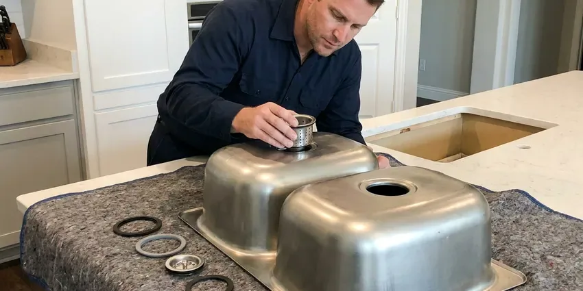
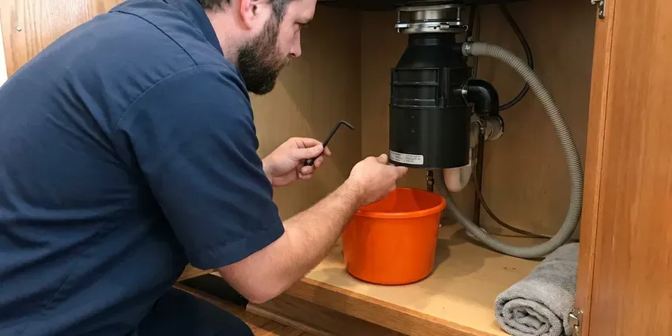
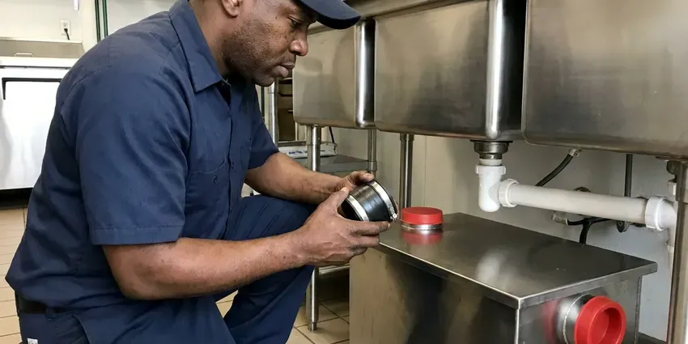

Kitchen Plumbing in Minot AFB, ND
From a loose trap nut to a new 33-inch farmhouse sink, HPN Plumbing does kitchen plumbing in Minot AFB, ND the way it should be done, tested before we leave.
- Homes and Commercial Kitchens
- Sinks, Faucets and Disposals
- Guaranteed Labor
- Disposals in Stock

Need a Kitchen Plumbing Repair in Minot AFB, ND?
A licensed plumber can usually be there today for leaks, clogs and jammed disposals.
Kitchen Plumbing for Homes and Businesses in Minot AFB, ND
HPN Plumbing knows kitchen drains take more abuse than any other line in a house. Water in North Dakota is often very hard, with high mineral and sulfate content that builds scale in water heaters and fixtures. Grease and scale together close up a drain fast. Our plumbers clear the line, replace what is worn and set the trap at the right height for the wall stub so it drains clean.
Our expertise includes:
- InSinkErator, Waste King and Moen disposal service
- Dishwasher supply and drain connections
- Air gaps, high loops and angle stops

Additional Kitchen Plumbing Services in Minot AFB, ND
Our kitchen plumbing services in Minot AFB, ND cover sinks, disposals, dishwashers, and grease traps so your kitchen stays clean, safe, and fully functional.


Kitchen Sink Installation in Minot AFB

Garbage Disposal Repair in Minot AFB



Grease Trap Installation near Minot AFB


Customers
Why Choose HPN Plumbing for Kitchen Plumbing in Minot AFB, ND?
Our plumbers know how North Dakota homes are built and which inspector questions come up on kitchen jobs. We fix the cause, not the drip. A leaking trap usually means a misaligned drain arm, so we reset the arm instead of cranking the nut tighter.
- Solid Parts, Brass stops, braided supplies and Schedule 40 traps go in instead of the cheap stuff.
- Commercial Kitchens, We work in restaurants and cafeterias around your service hours.
- We Know the Local Housing, Our plumbers see the same galvanized drains and tired shutoff valves in Minot AFB homes every week.
Citywide Coverage
Older neighborhoods in Minot AFB often have galvanized drains and old stops that will not shut off, while newer subdivisions have PVC and quarter-turn stops. We carry parts for both. That way a repair in a 60 year old house does not need a second trip to the supply house.
Experienced Team
Fixtures from Kohler, Moen, Delta, Blanco, Elkay and InSinkErator are installed and repaired by our plumbers every week. Each brand has its quirks. They can plumb an undermount, drop-in or farmhouse sink so the trap meets the wall stub without strain.
Safety-First Approach
We install dishwasher air gaps or high loops, proper traps and approved disposal connections to meet North Dakota plumbing code. Wiring is done with the power off. Without an air gap or high loop, dirty sink water can siphon back into the dishwasher, and that is the reason the rule exists.
Trusted Certified Minot AFB Plumbing Services Professionals
At HPN Plumbing, we take pride in licensed, certified plumbing services throughout Minot AFB, ND. Those papers on the wall mean something. Every repair, install and maintenance visit follows strict safety and quality rules, and the plumbers doing the work carry recognized industry credentials.
Call Us Now PHCC Plumbing Contractor Recognition
PHCC Plumbing Contractor Recognition Better Business Bureau (BBB) Accreditation
Better Business Bureau (BBB) Accreditation Angi Certified Pro
Angi Certified Pro ISO 9001 Quality Management Certification
ISO 9001 Quality Management CertificationWhat Our Kitchen Plumbers Install and Repair in Minot AFB, ND
Emergency Kitchen Plumbing in Minot AFB, ND
First thing: turn both angle stops under the sink clockwise until they stop. If a stop will not close or is the thing leaking, the main shutoff is the next move, usually near the water heater or where the line enters the house. After that, give us a call. We carry replacement quarter-turn stops and can swap one in about twenty minutes once the water is off.

InSinkErator Models We Service in Minot AFB
Badger units are the basic line, with a single grind stage and a 1/3 to 3/4 horsepower motor. Evolution models add grind stages and sound insulation, which matters in an open kitchen, and some carry longer in-home warranties than the basic line does. We stock the common sizes. We also service older InSinkErator units when the motor is still sound.
Disposal Installation and Upgrades in Minot AFB
Most families do fine with a 1/2 horsepower unit, while big cooks and large households do better with 3/4 or 1 HP. Each install gets a new mounting assembly, a new discharge tube and a punched dishwasher knockout if you have a dishwasher. We run it with water before we go. Then we check the flange and the discharge tube with a dry towel.
Replacing an Old Kitchen Sink in Minot AFB
Pulling an old cast iron sink takes two people and a putty knife, since they are heavy and usually caulked in tight. We check the cutout first. Your new sink must fit the existing opening or the countertop needs cutting, so we confirm the size before you order. The drain gets rebuilt to suit the new bowl depth.
Workstation and Farmhouse Sinks in Minot AFB
Farmhouse sinks need a cabinet built to carry them, since a 30 inch fireclay bowl can weigh over 100 pounds before water. The support frame gets checked first. Workstation sinks with ledges and accessories often have an offset drain, so the trap and disposal have to be planned around that drain location before the counter crew arrives.
Grease Trap Installation and Cleaning in Minot AFB
Grease traps are sized by flow, and a three-compartment sink usually needs at least a 20 gallon per minute unit. We set the trap level, install the flow control fitting and vent it so it does not siphon. Cleaning schedules depend on volume. Busy fryer kitchens may need it every few weeks.
Disposal Repair and Replacement in Minot AFB, ND
A disposal that hums but will not spin usually has something wedged in it. We cut the power, work the flywheel loose with a 1/4 inch hex key from underneath, pull out the bottle cap or bone, and press the red reset button before we run it again. Leaking units are another matter. Water from the bottom of the housing means the seals are gone and the unit needs replacing.

Dishwasher and Ice Maker Lines in Minot AFB
A dishwasher needs a hot supply with its own shutoff, a drain to the disposal or a wye tailpiece, and an air gap on the sink deck or a high loop fastened under the counter, depending on local code. Fridges need a cold line. We run braided stainless or copper to the fridge with a quarter-turn shutoff, never the thin plastic tubing that splits behind the fridge.
Kitchen Plumber Near Me in Minot AFB, ND
Anywhere in Minot AFB, ND, HPN Plumbing runs stocked trucks so most kitchen calls finish on the first visit. No waiting a week. We keep disposals, traps, angle stops and supply lines on board, which covers the large majority of what goes wrong under a sink.
Need a kitchen plumber close to home in Minot AFB? Our trucks run the area every day. A typical home job is one trip, and we take the old parts with us and dry out the cabinet before leaving.
HPN Plumbing at a Glance
- Licensed and insured plumbers serving Minot AFB, ND
- 24/7 emergency service with same-day scheduling
- Upfront, flat-rate pricing before work begins
- 4.9-star rated by 408+ North Dakota customers
Minot AFB Map
Minot AFB Information
- Population
- 5,017
- Area codes
- Local
- Service area
- Minot AFB and towns within a 40 mile drive
- Nearby
- Minot, Watford City, Williston, Mandan
Water in North Dakota is often very hard, with high mineral and sulfate content that builds scale in water heaters and fixtures. Under a Minot AFB, ND kitchen sink, you see it as scale on the aerator and buildup in the trap long before the drain quits.
Expert Services
Reach out to HPN Plumbing for reliable plumbing work done by licensed pros in Minot AFB, ND.
Our Specialized Plumbing Services in Minot AFB, ND
At HPN Plumbing, we handle the full list of plumbing services across Minot AFB, ND. We go from leak detection all the way to full system installations, for homes and commercial buildings, and we do it quickly at a fair price. Take a look at our core services below:


Our Kitchen Plumbing Routine in Minot AFB, ND
Most kitchen calls in Minot AFB follow the same simple path.
Tell Us the Problem
Call (701) 403-1348 and describe what you see under the sink. We ask a few questions so the right parts come on the truck.
On-Site Look
Your plumber pulls the trap or tests the disposal at your Minot AFB home, explains what failed, and gives a written price.
Fix It Right
After your approval, the plumber fixes it and tests it the way you will use it, then cleans up the cabinet.
Frequently Asked Questions About Kitchen Plumbing in Minot AFB
A trap or supply line repair usually costs $125 to $300. Expect $250 to $650 for a disposal with the unit, $350 to $900 for a kitchen sink install, and about $1,500 and up for a commercial grease trap. The price is set up front.
Tightening a slip nut is fine. The wiring is where it gets risky. Poorly sealed strainers and flanges can drip into the cabinet for months unnoticed, and the particleboard base swells and falls apart.
Restaurants typically clean every one to three months, though a busy fryer kitchen may need it every few weeks. Most houses do not have one. The common guideline is to clean before the grease and solids fill about a quarter of the trap's depth, and your local sewer district may set its own schedule.
Repair covers jams, tripped resets, loose mounts and leaking sink flanges. You need a new unit when the motor dies, the chamber cracks or the bottom of the housing leaks, since those internal parts are not replaceable. We tell you which one it is.
Two to four hours covers most of them, including the sink, faucet, strainers and trap. New drain lines add time. If the new sink is deeper than the old one, the trap and drain arm may need to come down, which adds an hour or so.
Units over eight to ten years old are usually worth replacing. Aging units jam more and lose their seals, and paying half the cost of a new one for a repair seldom pays off. Newer models also run quieter.
Figure on two to four hours for a standard sink swap when the counter opening fits and the drain lines are in good shape. Undermounts take longer. Cutting the counter, changing the cabinet or moving the drain arm can stretch it to a full day.
Parts and labor on kitchen plumbing jobs are covered by HPN Plumbing. Coverage length varies with the service and the parts installed, and the technician goes over it before you approve the job. It goes in writing.
What Our Customers Say About Our Plumbing Experts

Carlos V.
Our house still had galvanized pipe, and upstairs the shower was a trickle. The crew repiped everything in PEX over three days and patched every drywall hole before they left. The pressure difference is night and day.
Repiping · Minot AFB, ND
Laura S.
Our 40 gallon tank started leaking from the bottom after thirteen years. The tech hauled the old one out, set a new unit with a fresh expansion tank, and had hot water running in about four hours. He took the old tank with him too.
Water Heater Replacement · Minot, ND
Lisa C.
Water was pouring out from under the washing machine on a holiday weekend. HPN Plumbing talked me through closing the valves over the phone and had a plumber at the house within ninety minutes. It was a burst fill hose.
Emergency Plumbing · Devils Lake, NDMonica A.
Our water bill nearly doubled in one month with no change in how we used water. The tech checked the meter, heard the leak under the hallway with his equipment, and opened a hole about a foot square. Fixed the same day.
Slab Leak Repair · Mandan, ND
Paul B.
Our pit pump ran nonstop even in dry weather. The plumber found the check valve was stuck open, so the same water kept cycling back into the pit. New valve, new float switch, done in an hour. It runs quiet now.
Sump Pump · Williston, NDJessica T.
We were adding a gas range in a kitchen remodel and needed a new line run from the meter. The plumber pulled the permit, ran the pipe through the crawl space, and had it inspected and approved within the week.
Gas Line Repair · Devils Lake, ND